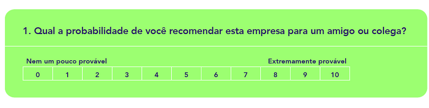
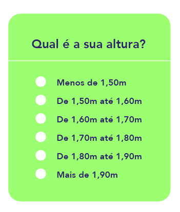
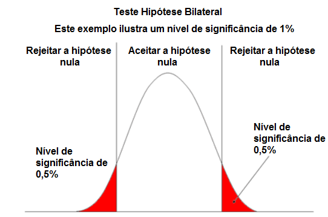
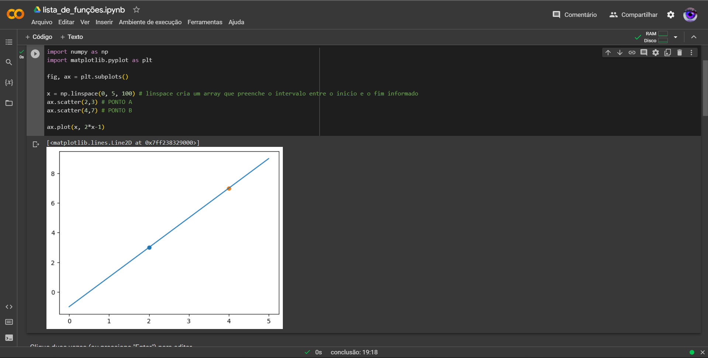
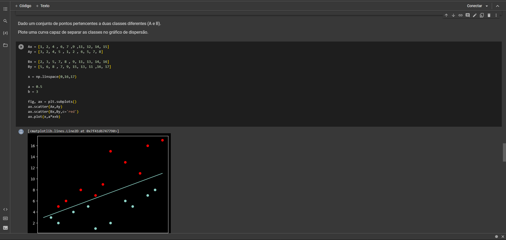

Ciência de dados
A Ciência de Dados é uma disciplina que visa extrair conhecimento e insights a partir de conjuntos de dados complexos. Sua função principal é a de fornecer uma abordagem sistemática e baseada em dados para resolver problemas e tomar decisões informadas.
Para um material mais aprofundado entre aqui
Amostragem
Amostragem é o processo de selecionar uma parte representativa de uma população maior com o objetivo de realizar análises e inferências sobre a população como um todo. Em outras palavras, é a prática de coletar dados de uma amostra de elementos de interesse, em vez de coletar informações de toda a população.
Amostra aleatória
Cada elemento da população tem a mesma possibilidade de serem escolhidos.
Exemplo
Amostra sistemática
É feita uma seleção aleatória do primeiro elemento da amostra e em seguidas os demais são escolhidos através de intervalos fixos ou sistemáticos.
Exemplo
Amostra estratificada
Separa os elementos em grupos homogêneos e em seguida é feita uma amostra aleatória em cada grupo (estrato).
Amostragem estratificada é um método de amostragem em que a população de interesse é dividida em subgrupos distintos e homogêneos chamados de estratos. A amostra é selecionada de forma que cada estrato esteja representado na amostra final de acordo com sua proporção na população.
Exemplo
Amostra por cluster
Amostragem por cluster é um método de amostragem em que a população de interesse é dividida em grupos ou conglomerados, chamados de clusters. Ao invés de selecionar individualmente os elementos da população, apenas alguns clusters são escolhidos aleatoriamente e todos os elementos dentro desses clusters são incluídos na amostra.
Exemplo
Escalas de medição
Existem quatro tipos principais de escalas de medição: nominal, ordinal, intervalar e de razão. Cada tipo de escala possui características específicas que determinam o tipo de análise estatística e as operações matemáticas que podem ser aplicadas aos dados coletados.
Qualitiva
Nominal
É o nível mais básico de medição, onde os dados são categorizados ou classificados em grupos ou categorias distintas.
Ordinal
Nessa escala, os dados são ordenados ou classificados em categorias que possuem uma relação de ordem. No entanto, a diferença entre as categorias não é quantificável ou uniforme.
Quantitativa
Intervalar
Uma escala de intervalo é aquela em que os intervalos entre os números nos dizem a posição. Ou que mostra o quanto determinadas coisas (pessoas, características, situações etc) estão distantes entre si em relação a determinada característica.
Razão
A escala de razão tem todas as características de uma escala de intervalo, mas ela também pode acomodar o valor de “zero” como absoluto — ou seja, não há valor numérico negativo.
Tendência central
Ela busca identificar um valor representativo ou típico em torno do qual os dados tendem a se agrupar. As principais medidas de tendência central são a média, a mediana e a moda. Cada uma delas fornece uma perspectiva diferente sobre os dados e pode ser útil em diferentes contextos.
Média
A média é calculada somando todos os valores de um conjunto de dados e dividindo pelo número total de observações. Ela é amplamente utilizada e fornece uma medida de tendência central que representa o valor médio dos dados. É sensível a valores extremos, pois eles podem afetar significativamente o resultado.
Mediana
A mediana é o valor do meio em um conjunto de dados ordenado. Ou seja, metade dos valores está acima e metade está abaixo da mediana. Ela é menos sensível a valores extremos em comparação com a média e é frequentemente usada quando há valores discrepantes que podem distorcer a média.
Moda
A moda representa o valor mais frequente em um conjunto de dados. É útil para identificar os valores mais comuns ou populares. Um conjunto de dados pode ter uma moda (unimodal) ou mais de uma moda (multimodal) se houver valores com frequências iguais.
Medidas de dispesão
Elas indicam quão espalhados ou concentrados os valores estão em torno da média, mediana ou moda. As medidas de dispersão ajudam a entender a amplitude dos dados, a identificar valores atípicos e a comparar a variabilidade entre diferentes conjuntos de dados.
Amplitude
A amplitude é a diferença entre o maior e o menor valor em um conjunto de dados. Ela fornece uma medida bruta da variabilidade, mas é sensível a valores extremos e não leva em conta a distribuição dos dados.
Variância
A variância é a média dos quadrados das diferenças entre cada valor e a média do conjunto de dados. Ela indica o quão dispersos os valores estão em relação à média. Valores maiores de variância indicam uma maior dispersão dos dados.
Desvio padrão
O desvio padrão é a raiz quadrada da variância. Ele representa a dispersão média dos valores em relação à média e tem a mesma unidade de medida dos dados originais. O desvio padrão é frequentemente usado porque é mais interpretável do que a variância.
Testes de hipótese
Eles são aplicados quando se deseja testar uma afirmação sobre um parâmetro desconhecido da população, como uma média, proporção, desvio padrão, correlação, entre outros.
O processo de teste de hipótese envolve a formulação de uma hipótese nula (H0) e uma hipótese alternativa (H1). A hipótese nula é uma afirmação inicial que assume que não há diferença ou relação entre os parâmetros ou variáveis em estudo, enquanto a hipótese alternativa sugere uma diferença, relação ou efeito.
Inferência
A inferência estatística é usada quando não é possível ou viável obter informações sobre toda a população em estudo.
O objetivo da inferência estatística é fazer generalizações a partir dos dados amostrais, buscando estimar parâmetros desconhecidos da população, testar hipóteses e tomar decisões baseadas nas evidências amostrais.

Funções
As funções matemáticas desempenham um papel fundamental na ciência de dados. Elas permitem modelar e descrever fenômenos e relacionamentos entre variáveis de interesse. Elas também são usadas para resolver equações, otimizar problemas, analisar dados e realizar previsões, entre muitas outras aplicações.
Entre as vistas estão a de 1° e 2° grau.
Exemplos
 Temas
Fora as matéria acima abordadas, durante o primeiro semestre foram vistos os seguintes conteudos:
- Análise de:
- Regressão
- De séries temporais
- De correlação e associação
- Limites
- Derivadas
- Integrais
Os mesmos podem ser vistos no Notion apresentado no inicio da página ou neste Google colab